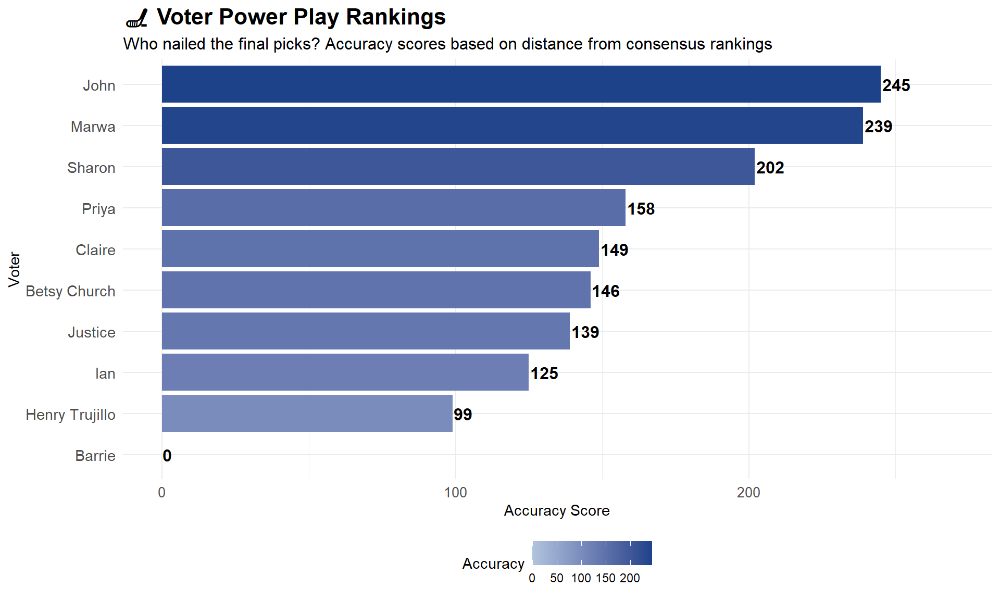

Interoperability is the ability of different systems, datasets, or tools to work together seamlessly, whether that means sharing, merging, or analyzing data across different formats or structures.
When we tried to merge everyone’s award ballots into one dataset, it quickly became clear how important interoperability is. Everyone had different file types, different column names, and different structures. Without a shared format or standard, combining our work became way harder and took way longer than it should have. Interoperability is basically about making systems and datasets able to talk to each other smoothly. If we had agreed on consistent variable names and formats from the start, the merge would’ve been way easier—and the focus could’ve stayed on the actual analysis, not cleaning up the mess. Definitely a lesson learned for future collab-heavy projects.
In this assignment, I will merge the datasets, then I will be calculating points from the ballots. Since the awards use a ranked voting system simulating the real NHL voting process, each ballot assigns weighted points—like 10 for 1st place, 7 for 2nd, and so on. To get a final ranking, we’ll add up the points across everyone’s submissions.
The player (or nominee) with the highest total number of points across all ballots is the winner. In other words, the one with most consistently high-ranked pick across everyone’s votes takes the award (?).
[1] "Vezina Trophy" "Hart Memorial Trophy"
[3] "Frank J. Selke Trophy" "James Norris Memorial Trophy"
[5] "Calder Memorial Trophy" "Lady Byng Memorial Trophy"
[7] "Calder Memorial" "Hart Memorial"
[9] "James Norris Memorial" "Vezina"
[11] "Frank Selke Memorial" "Lady Byng Memorial"
[13] "vezina_trophy" "hart_memorial_trophy"
[15] "james_norris_memorial_trophy" "calder_memorial_trophy"
[17] "frank_j_selke_trophy" "lady_byng_memorial_trophy"
Code
standardize_award <-function(award) { award <-tolower(award) award <-gsub("_", " ", award) award <-trimws(award)case_when(str_detect(award, "hart") ~"Hart Memorial Trophy",str_detect(award, "vezina") ~"Vezina Trophy",str_detect(award, "norris") ~"James Norris Memorial Trophy",str_detect(award, "calder") ~"Calder Memorial Trophy",str_detect(award, "selke") ~"Frank J. Selke Trophy",str_detect(award, "lady byng") ~"Lady Byng Memorial Trophy",TRUE~str_to_title(award) )}all_ballots <- all_ballots %>%mutate(award =standardize_award(award))unique(all_ballots$award)
[1] "Vezina Trophy" "Hart Memorial Trophy"
[3] "Frank J. Selke Trophy" "James Norris Memorial Trophy"
[5] "Calder Memorial Trophy" "Lady Byng Memorial Trophy"
# A tibble: 216 × 4
award player total_points n_votes
<chr> <chr> <dbl> <int>
1 Calder Memorial Trophy Kirill Marchenko 45 5
2 Calder Memorial Trophy Wyatt Johnston 40 6
3 Calder Memorial Trophy Marco Rossi 17 5
4 Calder Memorial Trophy Dylan Holloway 16 3
5 Calder Memorial Trophy Bobby Brink 10 1
6 Calder Memorial Trophy Jake Sanders 10 1
7 Calder Memorial Trophy Kirill Machenko 10 1
8 Calder Memorial Trophy Kirill Marchenko 10 1
9 Calder Memorial Trophy Nathan Clurman 10 1
10 Calder Memorial Trophy Marco Rossi 7 1
# ℹ 206 more rows
Top 3 for each award
Code
library(dplyr)top3 <- final_scores %>%group_by(award) %>%slice_max(total_points, n =3) %>%arrange(award, desc(total_points))print(top3)
# A tibble: 27 × 4
# Groups: award [6]
award player total_points n_votes
<chr> <chr> <dbl> <int>
1 Calder Memorial Trophy Kirill Marchenko 45 5
2 Calder Memorial Trophy Wyatt Johnston 40 6
3 Calder Memorial Trophy Marco Rossi 17 5
4 Frank J. Selke Trophy Brandon Tanev 20 2
5 Frank J. Selke Trophy Jackson Blake 17 2
6 Frank J. Selke Trophy Nathan MacKinnon 15 2
7 Hart Memorial Trophy Leon Draisaitl 35 6
8 Hart Memorial Trophy Nathan MacKinnon 22 3
9 Hart Memorial Trophy Nikita Kucherov 20 3
10 James Norris Memorial Trophy Ian Cole 18 3
# ℹ 17 more rows
Rank assignment and distance calculation
Each player gets an official rank based on their total points (1st place = top scorer).
voter_agreement %>%slice_min(total_difference, n =1)
# A tibble: 1 × 2
voter total_difference
<chr> <dbl>
1 John 279
Finally here is a ranking of everyone
Code
print(voter_agreement)
# A tibble: 10 × 2
voter total_difference
<chr> <dbl>
1 John 279
2 Marwa 285
3 Sharon 322
4 Priya 366
5 Claire 375
6 Betsy Church 378
7 Justice 385
8 Ian 399
9 Henry Trujillo 425
10 Barrie 524
Code
max_diff <-max(voter_agreement$total_difference)voter_agreement <- voter_agreement %>%mutate(accuracy = max_diff - total_difference,label =ifelse(total_difference ==0, "🏆 Perfect!", as.character(accuracy)) )ggplot(voter_agreement, aes(x =reorder(voter, accuracy), y = accuracy)) +geom_bar(aes(fill = accuracy), stat ="identity") +scale_fill_gradient(low ="#B0C4DE", high ="#1D428A") +coord_flip() +geom_vline(xintercept =mean(voter_agreement$accuracy), linetype ="dashed", color ="gray40") +geom_text(aes(label = label),hjust =-0.05,size =4.2,fontface ="bold" ) +labs(title ="🏒 Voter Power Play Rankings",subtitle ="Who nailed the final picks? Accuracy scores based on distance from consensus rankings",x ="Voter",y ="Accuracy Score",fill ="Accuracy" ) +theme_minimal() +theme(plot.title =element_text(face ="bold", size =16),plot.subtitle =element_text(size =12),axis.text.y =element_text(size =11),axis.text.x =element_text(size =10),legend.position ="bottom" ) +expand_limits(y =max(voter_agreement$accuracy) *1.1)

Source Code
---title: "Hockey Ballot Blender"format: html: toc: true toc-depth: 2 html-math-method: katex code-copy: true code-fold: true code-tools: trueexecute: warning: false message: false error: true---Interoperability is the ability of different systems, datasets, or tools to work together seamlessly, whether that means sharing, merging, or analyzing data across different formats or structures.When we tried to merge everyone’s award ballots into one dataset, it quickly became clear how important interoperability is. Everyone had different file types, different column names, and different structures. Without a shared format or standard, combining our work became way harder and took way longer than it should have. Interoperability is basically about making systems and datasets able to talk to each other smoothly. If we had agreed on consistent variable names and formats from the start, the merge would’ve been way easier—and the focus could’ve stayed on the actual analysis, not cleaning up the mess. Definitely a lesson learned for future collab-heavy projects.In this assignment, I will merge the datasets, then I will be calculating points from the ballots. Since the awards use a ranked voting system simulating the real NHL voting process, each ballot assigns weighted points—like 10 for 1st place, 7 for 2nd, and so on. To get a final ranking, we’ll add up the points across everyone’s submissions.The player (or nominee) with the highest total number of points across all ballots is the winner. In other words, the one with most consistently high-ranked pick across everyone’s votes takes the award (?).```{r setup, include=FALSE}library(readr)library(readxl)library(dplyr)library(stringr)library(janitor)library(tidyr)library(ggplot2)``````{r}clair <-read_csv("Clair_ballots.csv")john <-read_csv("John_ballots.csv")marwa <-read_csv("Marwa_ballots.csv")priya <-read_excel("Priya_ballots.xlsx")henry <-read_excel("Henry_ballots.xlsx")ian <-read_excel("Ian_ballots.xlsx")betsy <-read_excel("Betsy_ballots.xlsx")barrie <-read_excel("Barrie_ballots.xlsx")justice <-read_excel("Justice_ballots.xlsx")sharon <-readRDS("sharon_ballot.rds")```# Combine all into one dataframe## Loop through all data frames and print the column names to spot inconsistencies```{r}ballots <-list(clair = clair,john = john,marwa = marwa,priya = priya,henry = henry,ian = ian,betsy = betsy,barrie = barrie,justice = justice,sharon = sharon)lapply(ballots, names)```## Clean all the tidy/long ones, fix Priya's wide format, and merge!```{r}clean_tidy_ballot <-function(df) { df %>% janitor::clean_names() %>% dplyr::rename_with(~gsub("trophy", "award", ., ignore.case =TRUE)) %>% dplyr::rename(voter = voter,award = award,rank = rank,player = player ) %>% dplyr::select(voter, award, rank, player)}clean_wide_ballot <-function(df) { df %>% janitor::clean_names() %>% tidyr::pivot_longer(cols =-c(voter, rank),names_to ="award",values_to ="player" ) %>% dplyr::mutate(rank =as.numeric(rank)) %>% dplyr::select(voter, award, rank, player)}tidy_names <-c("clair", "john", "marwa", "henry", "ian", "betsy", "barrie", "justice", "sharon")tidy_cleaned <-lapply(tidy_names, function(name) clean_tidy_ballot(ballots[[name]]))priya_cleaned <-clean_wide_ballot(ballots$priya)all_ballots <- dplyr::bind_rows(tidy_cleaned, priya_cleaned)#checking for inconsistenciesunique(all_ballots$award)standardize_award <-function(award) { award <-tolower(award) award <-gsub("_", " ", award) award <-trimws(award)case_when(str_detect(award, "hart") ~"Hart Memorial Trophy",str_detect(award, "vezina") ~"Vezina Trophy",str_detect(award, "norris") ~"James Norris Memorial Trophy",str_detect(award, "calder") ~"Calder Memorial Trophy",str_detect(award, "selke") ~"Frank J. Selke Trophy",str_detect(award, "lady byng") ~"Lady Byng Memorial Trophy",TRUE~str_to_title(award) )}all_ballots <- all_ballots %>%mutate(award =standardize_award(award))unique(all_ballots$award)```# Scoring the votes and rank nominees## Define the scoring system```{r}point_values <-c(`1`=10, `2`=7, `3`=5, `4`=3, `5`=1)```## Adding a column based on rank```{r}all_ballots <- all_ballots %>%mutate(points = point_values[as.character(rank)])```## Calculate total points for player each award```{r}final_scores <- all_ballots %>%group_by(award, player) %>%summarise(total_points =sum(points, na.rm =TRUE),n_votes =n() ) %>%arrange(award, desc(total_points)) %>%ungroup()print(final_scores)```## Top 3 for each award```{r}library(dplyr)top3 <- final_scores %>%group_by(award) %>%slice_max(total_points, n =3) %>%arrange(award, desc(total_points))print(top3)```# Rank assignment and distance calculation## Each player gets an official rank based on their total points (1st place = top scorer).```{r}final_ranks <- final_scores %>%group_by(award) %>%arrange(desc(total_points)) %>%mutate(final_rank =row_number()) %>%select(award, player, final_rank)```## Joining final rank to individual ballots```{r}ballots_with_ranks <- all_ballots %>%left_join(final_ranks, by =c("award", "player"))```## Calculating distance from final rankA good metric could be the sum of absolute differences between a voter's rank and the final rank.```{r}voter_agreement <- ballots_with_ranks %>%mutate(rank_diff =abs(rank - final_rank)) %>%group_by(voter) %>%summarise(total_difference =sum(rank_diff, na.rm =TRUE)) %>%arrange(total_difference)```# The closest voter!```{r}voter_agreement %>%slice_min(total_difference, n =1)```# Finally here is a ranking of everyone```{r}print(voter_agreement)``````{r, fig.width=10, fig.height=6}max_diff <- max(voter_agreement$total_difference)voter_agreement <- voter_agreement %>% mutate( accuracy = max_diff - total_difference, label = ifelse(total_difference == 0, "🏆 Perfect!", as.character(accuracy)) )ggplot(voter_agreement, aes(x = reorder(voter, accuracy), y = accuracy)) + geom_bar(aes(fill = accuracy), stat = "identity") + scale_fill_gradient(low = "#B0C4DE", high = "#1D428A") + coord_flip() + geom_vline(xintercept = mean(voter_agreement$accuracy), linetype = "dashed", color = "gray40") + geom_text( aes(label = label), hjust = -0.05, size = 4.2, fontface = "bold" ) + labs( title = "🏒 Voter Power Play Rankings", subtitle = "Who nailed the final picks? Accuracy scores based on distance from consensus rankings", x = "Voter", y = "Accuracy Score", fill = "Accuracy" ) + theme_minimal() + theme( plot.title = element_text(face = "bold", size = 16), plot.subtitle = element_text(size = 12), axis.text.y = element_text(size = 11), axis.text.x = element_text(size = 10), legend.position = "bottom" ) + expand_limits(y = max(voter_agreement$accuracy) * 1.1)```